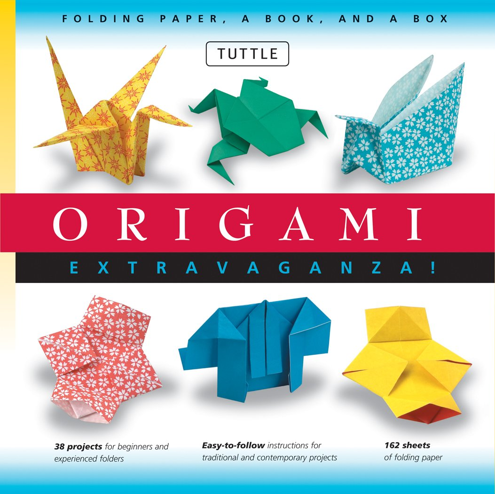

Origami Designs
Introduction to Origami
Origami is the art of paper folding, which is often associated with Japanese culture. In modern usage, the word "origami" is used as an inclusive term for all folding practices, regardless of their culture of origin.
Steps :-
To learn making Origami ,click the Image below.

About Origami
History of origami
Types of Origami
Types of origami